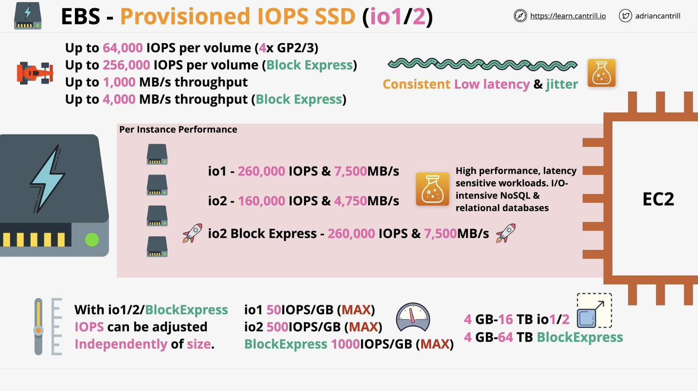
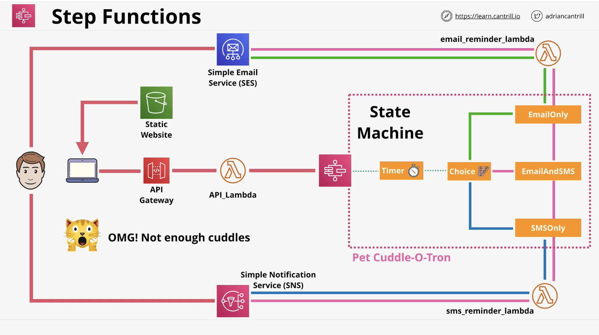
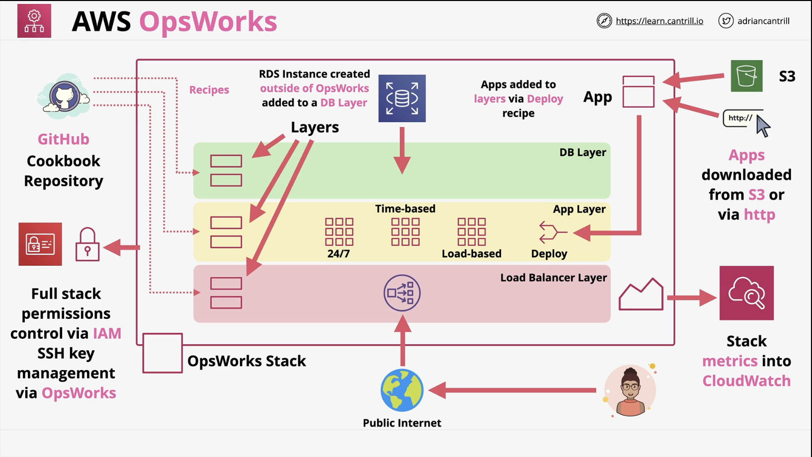
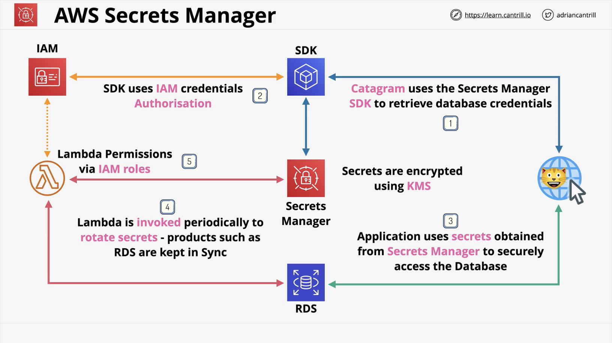
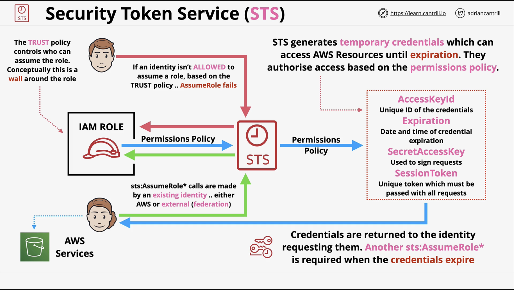
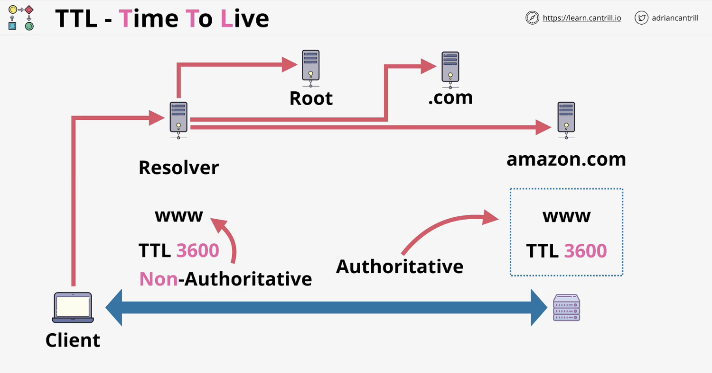
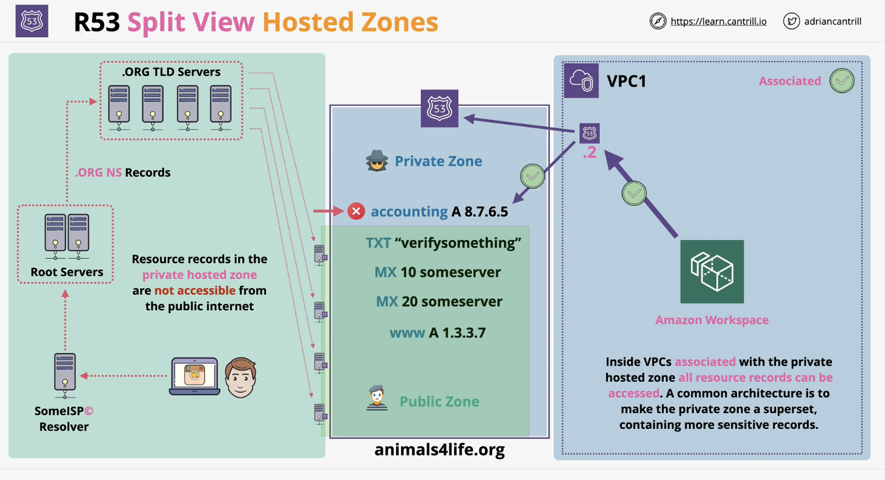
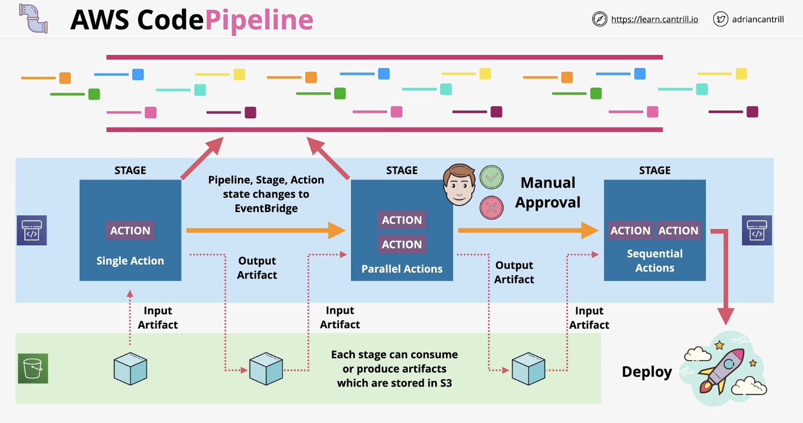
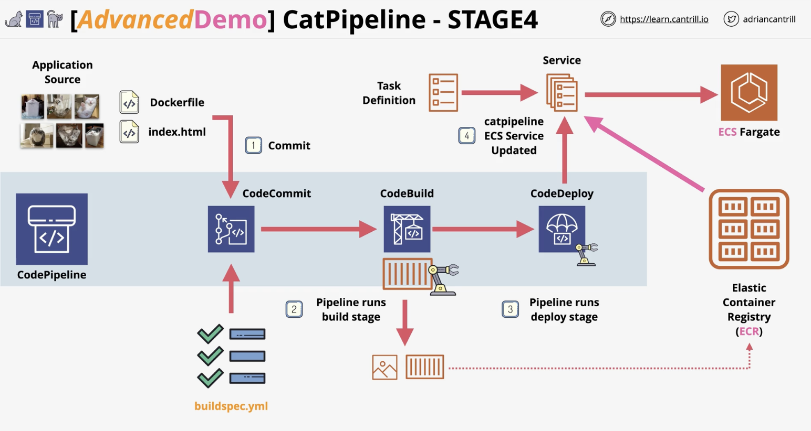
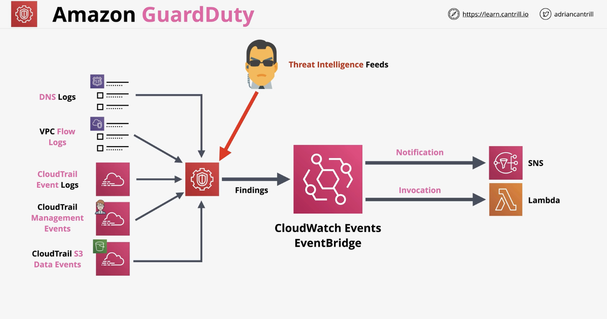

About
This book contains material for preparing for the AWS DevOps Professional (DOP-C02) certificate.
It is built using Rust's mdBook.
Background
Here is some general information relevant to DevOps and cloud computing.
Cloud computing
NIST defines 5 characteristics of cloud computing:
- on-demand self-service
- broad network access
- resource pooling
- rapid elasticity
- measured service
Cloud computing services:

DevOps principals
- Collaboration
- Communication
- Transparency
Continuous integration
When developers regularly merge their code changes into a central repository, after which automated builds and tests run.
Continuous delivery
When code changes are automatically built, tested and prepared for a release to production.
Infrastructure as code (IaC)
When infrastructure is provisioned and managed using code and software development techniques such as version control and continuous integration.
Monitoring and logging
Enabled organisations to see how applications and infrastructure performance impact the experience of the end user.
Deployment strategies
Defines how software is delivered.
In-place deployment
- The previous version of software is stopped, the latest version is installed and the new version of the application is started
- New infrastructure does not have to be created
- Service outage is assumed
Blue/green deployment
- A technique for releasing an application by shifting traffic between 2 identical environments running differing versions of an application
- Enables launching a new version (green) of an application alongside an old version (blue) to monitor and test before traffic is re-routed
- minimises downtime and allows rollback
Canary deployment
Incrementally deploying a new version in a slow fashion until eventually replacing the old with the new version entirely.
Linear deployment
Traffic is shifted in equal increments in a way where you can specify the percentage of traffic to be shifted every number of minutes.
All-at-once deployment
All traffic is shifted from original environmnet to the new one all at once.
Forward and reverse proxy
Forward proxy
A server that sits infront of the client machine and intercepts requests to the internet and communicates on behalf of the clients as a middleman.
Example usage includes: blocking access to certain content, protecting online identity by using the proxy's IP address.
Reverse proxy
A server that sits infront of the web servers intercepting requests from clients such that the client does not communicate directly with the origin server.
Benefits include load balancing, protection from attacks, caching, SSL encryption.
DNS
A DNS zone is a database containing records. A nameserver (NS) is a DNS server that hosts 1 or more zones. (More on that in the Route53 tab).
DNS query flow:
- A user requests a domain eg. www.netflix.com
- DNS is used to locate the authoritative zone which hosts the record(s), to obtain the IP address of this domain
- First the local cache and host file is checked
- Next a DNS resolver is used, usually provided by the ISP (Internet Service Provider)
- The resolver checks its cache and if needed, queries the root zone via 1 of the root servers. The IP of this server is maintained in the browser
- The root server will return details of the
.comnameservers - The resolver then queries the netflix.com DNS nameservers
- They will return an authoritative response
- This might just give a CNAME instead of an IP, in which case another query is needed
Cross-Origin Resource Sharing (CORS)
Origin is the site you visit.
Same-origin requests are always allowed, eg. when the browser calls a domain which defines origin.
Cross-origin requests are made to different domains than the origin i.e. when the AWS API is called to retrieve an image from another bucket. These requests are always restricted but are controlled by CORS. CORS are defined on the origin and provide directives to allow the cross-origin requests.
CORS configuration can be defined on S3 buckets using JSON. CORS configuration is processed in order.
Request types
There are 2 types of requests to a resource that could require a CORS configuration.
-
Simple requests: works as long as the other origin is configured to allow requests from the original origin.
-
Preflight and Preflighted requests: when the browser sends a HTTP request to the other origin to determine if the request you are making is safe to send.
CORS configuration
Some relevant configuration that the other origin sends to the web browser:
Access-Control-Allow-Origincan be*or a particular origin allowed to make requestsAccess-Control-Max-Ageindicates how long results of a preflight request can be cachedAccess-Control-Allow-Methodsdefines methods that could be used for cross-origin requestsAccess-Control-Allow-Headerscan be contained in the CORS configuration and in the response to a preflight request and indicates which HTTP headers can be used with the request
OSI model
The OSI (Open System Interconnection) model is a conceptual model which enables diverse systems to communicate using standard protocols.
// L7: application
// L6: presentation
// L5: session
// L4: transport
// L3: network
// L2: data link
// L1: physical
Host layers: L7, L6, L5, L4. How the data is chopped up and reassembled for transport and how it is formatted to be understandable.
Media layers: L3, L2, L1. How data is moved between point A and point B.
L1: Physical
- A physical medium can be copper (electrical), fibre (lights) or WIFI (radio frequency)
- L1 specifications define the transmission and reception of raw bit streams between a device and a shared physical medium. It defines things like voltage levels, timing, rates, distances, etc.
- This layer defines standards for transmitting onto the physical medium and standards for receiving
- Is primitive i.e. everything is broadcast and there is no inter-device communication or access control
L2: Data link
- Requires a functional L1
- Devices at L2 have a unique hardware address (MAC)
- L2 provides frames which are a format for sending information over a L2 network
- The transmission and reception of frames is handled by L1
- A frame is a container of bits divided into parts eg. destination MAC address, source MAC address, payload, etc.
- L2 can interpret the parts of a frame it has received, L1 can't
- L2 facilitates data transfer between 2 devices on the same network (intra-network)
L3: Network
- Used to facilitate data transfer between devices on different networks
- Adds IP for cross-network routing
- IP packets are moved from source to destination and encapsulated inside different frames along the way
- It is able to break down the segments that it receives from the transport layer into packets which are reassembled on the receiving device
It is useful to know at this point that a subnet mask allows a host to determine if an IP address; it needs to communicate with, is local or remote which influences if it needs to use a gateway or can communicate locally.
A subnet mask of 255.255.0.0 and /16 prefix mean the same thing.
ARP (Address Resolution Protocol) is used when you have a L3 packet and you want to encapsulate it inside a frame and then send that frame to a MAC address. The MAC address is not known and you need a protocol which can find the MAC address for a given IP address.
Routers are L3 devices i.e. they understand L1, L2 and L3.
L4: Transport
- Protocols include TCP and UDP
- TCP is used for reliability, error correction and ordering of data. It is slower and creates a bidirectional channel of communication
- UDP is faster but less reliable
- TCP introduces segments which are encapsulated inside IP packets
- This layer relies on L3 for transport but introduces source and destination ports
- TCP establishes a reliable connection between 2 devices. A connection or a channel is a collection of segments.
- TCP uses a 3-way handshake with signals such as SYN, ACK and FIN
Containers
Virtualisation is running multiple operating systems on the same physical hardware.
------------------------------------------
App 1 | App 2 | ... | App N
------------------------------------------
Runtime 1 | Runtime 2 | ... | Runtime N
------------------------------------------
Guest OS 1 | Guest OS 2 | ... | Guest OS N
------------------------------------------
AWS Hypervisor (NITRO)
------------------------------------------
AWS EC2 host
------------------------------------------
The OS alone takes a lot of resources 60% to 70% of the disk and a lot of memory leaving little resources for the applications which run in the VMs.
Most of the time, the same OS is running on multiple VMs i.e. there's duplication.
Containerisation is when a container runs a copy of a Docker image.
---------------------------------------------
Container 1 | Container 2 | ... | Container N
---------------------------------------------
Container Engine (a process)
---------------------------------------------
Host OS
---------------------------------------------
AWS EC2 hardware
---------------------------------------------
The container which is (app + runtime) consumes little resources and is lightweight.
Docker image
- The Docker image is made of multiple independent layers, it is a stack of layers.
- The Dockerfile is used to create the Docker image
- Each line creates a new filesystem layer inside the Docker image
FROMis used for the base image- The filesystem layers that make up an image are read-only
- The Docker container is a running copy of the Docker image plus a read/write layer
- Multiple containers can be created from 1 image
- Layers are re-used minimising resource usage, the read/write layer is what differentiates containers.
- A container registry is a hub of container images
- Containers are islated from the outside world and they can expose ports so that the services in the container can be accessed
IAM (Identity and Access Management)
An AWS account is a container for identities and resources. Every AWS account has a unique email which is that of the root user of the account.
With IAM, you can create users, groups and roles. Multiple identities can be created within a single AWS account. A max of 5000 IAM users are allowed per account. And an IAM user can be a member of max 10 groups.
Identity types
- users: for humans or applications
- groups: a collection of related users eg. developers
- roles: for AWS services or for getting external access
Policies
Policies can be created and attached to users, groups or roles to allow or deny access to AWS services. It contains statements which grant or deny permissions to AWS services.
A statement object consists of:
- Sid: statement ID
- Effect: is either allow or deny
- Action: a list of actions/operations on a service
- Resource: a list of resources/names
A policy can be:
- managed: used for multiple identities
- inline: used for exceptional allow/deny to a managed policy
IAM Groups
- Are containers for IAM users
- Groups can not be nested in other groups
- In a policy, users and roles can be referenced using their ARN. Groups however can not be referenced in policies because groups are not a true identity. Groups can have permissions attached to them.
IAM Roles
- Used by multiple principals, humans, service, applications or an unknown number of principals
- Roles are generally used on a temporary basis i.e. borrowing permissions for a short time
- Roles can have identities, premissions, policies attached to them
- Roles can be referenced in resource policies
- Roles can have 2 types of policies attached: Trust policy and Permissions policy
Trust policy controls which identities can assume that role.
Permission policy controls access to resources.
Scenarios for using role:
-
In case of AWS services like Lambda where it needs access rights to perform actions. You should avoid hardcoding access keys into the Lambda function. A role is created and the Lambda function is added to its Trust policy. This role has a Permissions policy which grants access to AWS products and services. The
sts::AssumeRoleis then used by the Lambda function. -
External identity. To allow users with external identities outside of AWS to do single sign-on. This use case enables exceeding the 5000 user-limit enforced on AWS accounts. In this example, a role can be assumed by an external identity.
ARN (Amazon Resource Name)
Used to uniquely identify resources within an AWS account.
It can have the following structures:
arn:partition:service:region:account-id:resource-idarn:partition:service:region:account-id:resource-type/resource-idarn:partition:service:region:account-id:resource-type:resource-id
Eg. arn:aws:s3:::my-bucket/*
AWS Organisations
This allows larger businesses to manage multiple AWS accounts
Start by taking a standard AWS account which is not in an organisation. Within this account, create an organisation. This account then becomes the management or master account of the organisation. The master account is used to invite other standard accounts into the organisation. The standard accounts that join an organisation become member accounts.
The structure of an organisation is hirarchichal i.e. there is an organisation root containing organisation units.
The organisation has consolidated billing i.e. billing is removed for member accounts. Billing is passed to the management account of the organisation.
New accounts can join an organisation via a link or they can be created directly. When creating or adding a new account to an organisation, a role is created or manually added respectively. This role allows the management account to switch into those new accounts.
SCP (Service Control Policy)
- A feature of AWS organisations which can be used to restrict AWS accounts
- SCP is a JSON policy that can be attached to an organisation, organisation unit or AWS account
- The management account is never affected by SCPs attached to the organisation. The management account can't be restricted
- SCP does not grant permissions, it only creates boundaries
- The default is Allow, you need to add Deny or remove the default Allow access
Example organisation structure:
Root
|
|---> management account
|---> Dev (OU)
|
|---> dev account
|
|---> Prod (OU)
|
|---> prod account
The SCP needs to be enabled.
FullAWSAccesspolicy is active- Create a new SCP eg. to deny S3 actions
- Apply the new SCP to the prod OU
- Detach the
FullAWSAccessSCP from prod OU - When you switch roles to the prod account, you will not have access to S3
Storage
EBS (Elastic Block Storage)
Is a service that provides block storage. Allocates raw physical disk as a volume. Volumes can be unencrypted or encrypted using KMS.
Storage is provisioned in 1 AZ where it is isolated and resilient. An EC2 instance in 1 AZ can not attach to a volume in another AZ.
A volume can be snapshotted into S3. It can be used to create volumes in different AZ and regions.
A volume is usually attached to 1 EC2 instance but you can use a multi-attach service to attach it to more than 1 instance at the same time.
EBS volume types
SSD-based
Where it uses flash memory chips (no moving parts).
- GP2 (General Purpose SSD)
Is good for boot volumes, low-latency interactive applications and dev/test environemnts.
A newly created volume can be as small as 1GB or as large as 16TB. It is created with an IO credit allocation.
- IO is 1 input/output operation
- An IO credit is a 16Kb chunk of data
- 1 IOP is 1 IO (16Kb) in 1 second
An IO credit bucket has a capacity of 5.4 million IO credits and fills at the baseline performance rate of the volume.
- GP3
Is also SSD-based but removes the credit/bucket architecture used in GP2 for something simpler.
Use case is similar to GP2 i.e. virtual desktops, medium sized single instance databases, low-latency apps, dev/test environments and bootable volumes.
Every GP3 volume regardless of size starts with 3000 IOPs and 125 MiB transfer per second. More specs come at a higher cost.
- IO2 BlockExpress
Designed for super high performance situation for consistency and low latency.
Can achieve 256,000 IOPs per volume and 4,000 MB/s throughput.

HDD-based (Hard Disk Drive)
Uses spinning magnetic disks with read/write heads.
Cheaper than SSD volumes.
- st1 (throughput optimised)
Is cheap.
Designed for data that is sequentially accessed.
Range from 125 GB to 16 TB in size.
IO is measured as 1MB block and st1 is capable of max 500 IOPs i.e. 500 MB/s.
- sc1 (cold HDD)
Is cheaper, lowest cost of EBS volume available.
Used to store data without the focus on performance.
Max of 250 IOPs (1MB IO size). Max 250 MB/s.
Range from 125 GB to 16 TB in size.
Instance Store volumes
They have higher performance than EBS volumes.
They offer the highest storage performace in AWS because they are locally attached.
Provide temporary block storage devices which are raw volumes that can be attached to instances to be used as a basis for a filesystem. They are local and are not presented over the network.
They are ephemeral and should not be used when persistence is requried.
They physically connect to 1 EC2 host. Instances on that host can access those volumes. An instance can use more than 1 volume.
They are only attached at launch time.
Data is lost if the volume moves, is resized or if there is hardware failure.
Storage Gateway
Runs as a virtual machine on premises, it enables hybrid storage between on-prem and AWS. It connects on-prem applications to unlimited cloud storage.
It works by installing the storage appliance in your local data centre, it then handles data transfer, encryption and caching. The storage appliance connects to local applications via LAN and to AWS via internet or Direct Connect.
Types of storage gateway
S3 File Gateway
This is best used for object storage, storing unstructured data (images, logs, etc.) in S3. It links on-prem file storage and S3.
Mount points are created locally and are available via 2 protocols NFS (Linux) or SMB (Windows).
Allows 10 bucket shares pre File Gateway.
File Gateway does not support object locking in the case of multiple file share to a bucket.
FSx File Gateway
Used for configuration or file data. Offers low overhead for accessing files.
Volume Gateway
Provides block storage. It provides raw disks over iSCSI connection.
Tape Gateway
Makes it easier to handle backup operations i.e. instead of using physical tapes, you can use virtual tapes.
Virtual Tape Library (VTL) stored in S3 buckets.
Tape Shelf (VTS) stored in Glacier and is generally used for archives where they are not frequently accessed.
S3 misc.
S3 security
S3 is private by default.
An S3 bucket policy is a form of resource policy; it is like identity policies but attached to a bucket.
Bucket policies can be complex for eg. deny access to an IP address range / if the identity using the bucket does not use MFA.
Access Control Lists (ACLs)
Are legacy and not recommended to use by AWS but they are used to apply security to objects or buckets.
S3 static website hosting
It allows access via standard HTTP by individuals using a web browser.
When you enable this, you have to set an index and an error document.
S3 bucket object versioning
By default, this is disabled. Once enabled, it can not be disabled again. The bucket however can be suspended and the versions deleted then re-enabled.
Versioning lets you store multiple versions of an object in a bucket.
An object has a key (name) and an ID (used for versioning). When versioning is disabled, the ID is null. But when versioning is enabled and an object is accessed without specifying an ID, the latest object is assumed.
When an object is deleted without specifying a version, a Delete Marker is added which is a special version of an object which hides all previous versions of that object. The Delete Marker can be deleted and the object can be active again.
To fully delete an object, you need to specify a version.
S3 bucket upload
By default, data is uploaded to S3 in a single blob of data in a single stream. A file is uploaded using the s3:PutObject action and put into a bucket.
But if a stream fails, the upload fails and nothing is uploaded. And a PUT upload is limited to 5GB of data in a single stream.
Multipart upload however improves the speed and reliability of uploads to S3. It does this by breaking data down into various blobs. The minimum size of the data uploaded should be 100MB.
An upload can be split into a max of 10,000 parts and each part can range in size from 5MB to 5GB. Unlike single stream upload, each part can fail in isolation and restart in isolation. Transfer rate; which is the speed of all parts, is therefore improved.
S3 Accelerated Transfer
Data can take inefficient routes to reach its destination especially if travelling from country to another. This can slow down data transfer due to this low performance.
Transfer acceleration for S3 uses the network of AWS edge locations located globally in convenient locations. This is by default switched off and needs to be enabled given certain restrictions.
The AWS network is purposely build to connect regions with one another.
S3 server-side encryption
Buckets are not encrypted, objects are. Objects can use different encryption settings.
Knowing that data to and from S3 is encrypted in transit, encryption at rest i.e. how data is stored on disk can be:
client-side encryption:
Data is encrypted at the client side and S3 receives data that is already encrypted. The client is responsible for the encryption keys and for the encryption process. Here, S3 is just used for storage.
server-side encryption:
Data is not encrypted on the client side but when it reaches S3 it gets encrypted. FYI encryption at rest is mandatory on S3.
Serve-side encryption for S3 objects has 3 types:
- SSE-C (server-side encryption with customer-provided keys)
The customer is responsible for the keys but S3 handles the cryptographic operation.
- SSE-S3 (server-side encryption with Amazon S3-managed keys)
This is the default. S3 provides the key and the encryption process.
- SSE-KMS (server-side encryption with KMS keys stored in AWS KMS)
Here, the KMS service is involved. The client has control over the KMS key. S3 handles the encryption process.
S3 bucket keys
This helps S3 scale and reduce cost when using KMS encryption.
Usually every object requires a unique KMS key to get encrypted. Which means that for every S3 object, a unique KMS key is needed. This increases cost due to the many requests to KMS, it might also be subject to throttling restrictions.
With bucket keys, instead of the KMS key being used to generate many data encryption keys, it is used to generate a time-limited bucket key. The bucket key is then used to generate data encryption keys for objects in the bucket. This reduces KMS API calls, reduces cost and improves scalability.
Object storage classes
1. S3 Standard
This is the default class where objects are replicated across at least 3 AZs. It can cope with AZ failure. It provides 11 nines (9s) of durability. The replication uses Content-MD5 Checksums and Cyclic Redundancy Checks (CRCs) to detect and fix any data corruption.
Billing is 1 GB per month fee for data stored. A $ per GB charge for transfer OUT (IN is free) and a price per 1,000 requests. No retrieval fee.
This class should be used for frequently accessed data which is important and non-replaceable.
2. S3 Standard-IA (infrequent access)
Shares most of the architecture of S3 Standard however it is much cheaper than S3 Standard.
It has a retrieval fee per GB of data, it is therefore designed for minimally accessed data.
It has a minimum duration charge of 30 days.
This class should be used for long-lived data which is important but where access is infrequent.
3. S3 One Zone-IA
This is cheaper than Standard and Standard-IA but with some compromise.
Shares most of the features of Standard-IA but data is not replicated and is stored in 1 AZ only.
This class should be used for long-lived data which is not critical and replaceable and where access is infrequent.
4. S3 Glacier Instant Retrieval
Is like S3 Standard-IA but has cheaper storage, more expensive retrieval and longer minimum storage duration of 90 days instead of 30.
Although it costs more to access the data, instant data access is still an option here.
5. S3 Glacier Flexible Retrieval
This allows storing data in a chilled state.
Similar to S3 Standard but with a storage cost 1 sixth of the cost of S3 Standard. It is therefore cost-effective but with some tradeoff.
Objects stored here are cold and not immediately available. Objects cannot be made publicly available and to gain access, a retrieval operation needs to be performed. You pay for object retrieval and they are stored in the S3 Standard class on a temporary basis. They are removed once accessed.
Retrieval can be expedited (1-5 minutes), standard (3-5 hours) and bulk (5-12 hours). The faster, the more expensive. Objects have a first byte latency in minutes or hours so this is not ideal for static website hosting.
Some limitations here are a 40KB minimum billable size and a 90 day minimum billable duration.
This class is ideal for archival data where frequent or real-time access is not needed.
6. S3 Glacier Deep Archive
Is the cheapest storage class and allows storing data in frozen state. It also has 40KB minimum billable size and 180 day minimum billable duration.
Similar to Glacier Flexible, objects are not publicly available and a retrieval job is needed to access the data.
Data is temporarily retrieved to S3 Standard-IA which takes 12 hours and Bulk up to 48 hours.
First byte latency is in hours or days.
7. S3 Intelligent-Tiering
Is a storage class that contains 5 different storage tiers:
- Frequent access
- Infrequent access
- Archive instant access
- Archive access
- Deep archive
The system monitors the usage of an object and moves it for you into the right tier based on frequency of access.
This class is good for data where the access pattern changes or is not known.
S3 lifecycle configuration
You can create lifecycle rules on S3 buckets which can automatically transition or expire objects in the bucket.
Lifecycle configuration is a set of rules that consist of actions which apply based on criteria i.e. do X if Y. They can be applied on a bucket or a group of objects in that bucket defined by prefix or tags.
Actions can be of 2 types:
- Transition actions: they can change the storage class of an object eg. from S3 Standard to S3 Standard-IA.
Note this exception: objects in S3 One Zone-IA can transition into S3 Glacier Flexible Retrieval or S3 Glacier Deep Archive but not S3 Glacier Instant Retrieval.

Transition can not happen in an upward direction, only downward.
Note that if an object is stored in S3 Standard, it requires to have been there for a minimum of 30 days before transitioning to an infrequent access tier like S3 Standard-IA or S3 One Zone-IA.
A duration of 30 days is required if objects were to transition further from IA tiers to Glacier classes.
- Expiration actions: they can delete objects or object versions.
S3 Replication
Replicating objects between a source and destination S3 bucket. 2 types of replication are supported by S3:
- Cross-Region Replication (CRR)
Allows replication of objects from a source bucket to 1 or more destination buckets in different AWS regions.
- Same-Region Replication (SRR)
The same process but where the source and destination buckets are in the same region.
An IAM role is configured to allow the S3 service to use it. The premissions on this role allows it to read data on the source bucket and replicate them on the destination bucket.
In case of replication between different AWS accounts, a bucket policy on the destination bucket is needed to allow the IAM roles to replicate data into it. Replication between bucket of the same account do not need this policy because the destination bucket trusts the source bucket.
You can replicate all objects or a subset and you can choose the storage class to be used. You can also define ownership of the objects eg. owned by the account of the destination bucket. You can also define a Replication Time Control (RTC) between the source and destination bucket.
Notes in replication
By default, replication is not retroactive i.e. objects that were already there are not replicated. Batch replication can be used to replicate existing objects.
Versioning needs to be ON on both source and destination buckets.
Replication is one-way and is not bi-directional.
Replication is able to handle objects that are unencrypted, SSE-S3, SSE-KMS and SSE-C.
Replication can not happen on objects in Glacier or Glacier Deep Archive.
S3 Pre-signed URLs
Used to give another person access to objects in an S3 bucket using your credentials and in a secure way.
Example: an IAM admin can make a request to S3 to generate a pre-signed URL while providing security credentials, bucket name, object key and expiry datetime and how the object will be accessed. The URL returned has encoded in it all the information provided. The unauthenticated user using the pre-signed URL interacts with the object as the preson who generated it.
Exam powerups
- A pre-signed URL can be created for an object you don't have access to
- The premissions used when an object is accessed via a pre-signed URL match the identity which generated it
- Authentication to an object in a bucket can be provided via a token in the URL
- You can generate a pre-signed URL for an object that does not exist
- You can create a pre-signed URL using the CLI
aws s3 presign <options>
S3 Select and Glacier Select
These 2 services can store objects with huge size (up to 5TB). Sometimes you do not want to retrieve an entire object and you want to instead filter it on the bucket side. S3 and Glacier Select services allow you to create a SQL-like statement to retrieve partial objects. The S3 service can use the SQL-like statement and apply it to the raw data in S3 to filter it down.
File formats include CSV, JSON, Parquet BZIP2 compression for CSV and JSON.
S3 Events
This feature allows you to create event configurations on a bucket. When enabled, a notification is generated when an event occurs in a bucket. Events can be delivered to different destinations eg. SNS, SQS and Lambda functions.
Eg. on object creation, restores, replications or deletion. The events themselves are JSON objects.
EventBridge is an alternative and it supports more types of events and more services.
S3 Access Logs
Helps understand what types of accesses are occurring on a source bucket. The logs are stored in a target bucket.
This feature needs to be enabled on the source bucket. Loggin is managed by a system called the S3 Log Delivery Groups. This group needs to be given access to the target bucket via an ACL.
S3 Object Lock
This feature is enabled on new buckets along with versioning. Once enabled, it can not be disabled.
Object Lock implements a Write-Once-Read-Many (WORM) architecture where objects versions can't be overwritten or deleted.
Has 2 types:
- S3 object lock retention
When you create the object lock, you specify the retention period in days or years.
This has 2 modes:
- Compliance mode: an object can not be adjusted deleted or overwritten during the retention period. And no change is possible to the retention period settings.
Eg. used for medical or financial data.
- Governance mode: same, but special permissions can be granted to allow lock settings to be adjusted. This is done using this permission
s3:BypassGovernanceRetention.
- S3 object local legal hold
A retention period is not set here and instead legal hold is set to be ON or OFF. There is no concept of retention.
Here you can not delete ot change the object version. The s3:PutObjectLegalHold permission allows you to add or remove the legal hold feature.

S3 Access Points
Features that improves the accessibility of S3 buckets, it simplifies the access to S3 buckets and objects.
Every access point can have an endpoint and can be used from within different networks.
Extra reading: https://docs.aws.amazon.com/AmazonS3/latest/dev/creating-access-points.html#access-points-policies
S3 Inventory
Helps you manage your storage within S3 buckets. Can be configured to generate inventory reports based on a specific frequency, eg. daily or weekly.
Output is generated in 1 of these 3 formats: CSV, ORC, Parquet.
The reports are stored in the target bucket.
DynamoDB
Is a no-SQL, wide-column database as a service product. It is a public service that can handle key/value and document data.
It is highly resilient across AZs and optionally globally. It is fast and is SSD-based.
It allows backups an data is encrypted at rest. It supports event-driven integration.
DynamoDB tables
A table is a grouping of items that share a primary key. The number of items is infinite but the max size of an item is 400KB.
A primary key can be simple (Partition) aka pk or composite which is a combination of the pk and the sk (Sort key).
Point-in-time Recovery (PITR)
Is disabled by default and needs to be enabled on a table-by-table basis. It allows for a 35 day recovery window.
Access
DynamoDB can be accessed via the console, CLI or API.
Capacity
2 capacity modes:
-
on-demand: managed by AWS.
-
provisioned: by specifying the RCU (read capacity unit) and WCU (write capacity unit) on a per table basis.
Every operation consumes at least 1 RCU/WCU with a max of 4KB per RCU and 1KB for WCU.
Every table has a RCU and WCU burst pool of 300 seconds of the read/write capacity unit on the table.
Operations
Query
Is the most efficient operation and is used with a partition key.
Scan
Is not too efficient since it moves through the table item by item.
Even if an item is not returned, capacity is still consumed.
Indexes
They help improve the efficiency of data retrieval and are of 2 types of indexes:
Local Secondary Indexes (LSI)
They must be created when the base table is created and they allow for an alternative sort key sk on the table.
Global Secondary Indexes (GSI)
They can be created at any time with a default limit of 20 per base table.
It allows for creating an alternative view of the table using a different partition key and sort key.
Streams and Triggers
Streams
Is a time ordered list of item changes in a table with a 24-hour rolling window. Changes include inserts, updates and deletes.
Triggers
Allow for actions to take place upon a change in the data. Actions can be via a Lambda function.
DynamoDB Accelerator (DAX)
Is an in-memory cache for DynamoDB that improves performance.
The interaction with the DynamoDB database is handled by the DAX SDK rather than the user application itself.
Global Tables
Provides a multi-master cross-region replication. Tables are created in multiple regions and added to the same global table becoming a replica table.
TTL
Used to set a timestamp for automatic delete of items. Useful for items that lose relevance after a period of time.
Elastic Load Balancing
It distributes traffic across different resources such as EC2 instances, containers and IP addresses in 1 or more availability zones.
LBs can be set to private or public.
Types
Application LB
- Runs at the OSI application layer, L7
- Targets IP addresses, EC2, EKS, Fargate, Lambda
Network LB
- At the OSI transport layer, L4
- Handles more traffic than the ALB
Gateway LB
- Runs at the OSI network layer, L3
- Can act as a single entry/exit for all traffic
Cloudormation (CFN)
-
Cloudformation allows automating infrastructure provisioning
-
Starts with a template written in YAML or JSON
-
The template defines logical resources
-
A template can create 1 or more stacks
-
A template can be reusable
-
The stack definition will create physical resources based on logical resources
-
If the stack definition is updated, the physical resources also change
-
Templates can take parameters i.e. accept input
-
Parameters are defined in the template and can have a types eg. an EC2 image
-
Pseudo parameters are defined by AWS. They are injected by AWS into the template eg. Region, stack ID, stack name, account ID, etc.
-
Cloudformation does things in parallel so use
DependsOnto define an order if needed -
You can configure Cloudformation to hold until a number of signals are successful before returning
CreateComplete -
You can configure a timeout for Cloudformation execution
Intrinsic functions
- Allow you to gain access to data at runtime i.e. when the template is being used to create a stack eg.
RefandFn::GetAttFn::JoinandFn::SplitFn::GetAZsandFn::SelectFn::(IF, And, Equals, Not, Or)Fn::Base64andFn::SubFn:CidrFn::Import ValueFn::FindInMapFn::Transform
Mappings
- Is an object in the template eg. map the prod env to a specific database config
- Mappings use the
!FindInMapintrinsic function
Outputs
- Provide status information or how to access services created by a stack
- Outputs are optional
Nested stacks
- There is a limit of 500 resources per stack and nested stacks can be used to overcome this resource limit
- Stacks are isolated and resources in them can't be referenced
- A root stack is the stack that gets created first
- A parent stack usually has nested stacks
- You can define a stack as a logical resource and make it refer to a YAML template
- Use nested stacks when resources are lifecycle-linked i.e. create and deleted together
Cross-stack references
- Is used when we want to create a shared resource eg. VPC usable by other stacks
- Stacks are isolated meaning things in a stack can't be referenced by another i.e. the
!Reffunction can't be used, with the exception that root stacks can reference the output of a stack - A use case of this is a VPC stack with a long lifecycle and app stacks that use it but have a shorter lifecycle
- Outputs of a stack can be exported making them visible to other stacks. You can then use
Fn::ImportValuein another stack instead of!Refin the same stack
Stack sets
- Allow you to deploy CFN stacks across many accounts and regions
- Stack sets are containers in an admin account. They contain stack instances that reference stacks
CFN DeletionPolicy
- Deleting a stack causes deleting a physical resource. This can cause data loss for eg. databases
- The deletion policy can be defined on a resource in a CFN template to specify an action for when the resource is deleted eg. Delete, Retain, Snapshot
CFN stack roles
- By default, CFN uses the permissions of the logged in identity
- CFN can assume another role to gain permissions
- We have a role attached to a stack
- a user creates a template with a role attached
- this user has
PassRolepermissions but doesn't actually have permissions to create the stack - the role can be created by an admin
CFN Init, cfn-init and cfn-hup
- Is a configuration management system
- The CFN Init can be defined in the metadata of a logical resource in a template.
UserDatacan be passed which containscfn-initused to implement the config we define cfn-initonly runs once and doesn't run again when the stack is updatedcfn-hupcan point at a logical resource in a stack to detect changes in its metadata. When it detects change it can run things likecfn-init
Notes on creating CFN templates
- The
UserDatasection serves as an init script that runs automatically when an EC2 instance launches for the first time. It executes at boot time - CFN waits for a signal from the EC2 instance. As soon as the instance is launched, CFN marks Creation Complete even though the
UserDatascript is still running i.e. instance bootstrapping hasn't finished.- here you can use
CreationPolicyandcfn-signalto signal to Cloudformation when bootstrapping the instance is finished
- here you can use
- The
UserDatapart is only executed once when the instance launches. If theUserDatais changed and the stack is updated, the instance won't rerun this configuration - Use the
cfn-initfeature andcfn-hupto reruncfn-initon metadata changes
CFN change sets
- Provides an overview of the changes that are to be applied to a stack. You can preview many change sets for a stack. The chosen change set can then be applied to the stack
CFN custom resources
- CFN doesn't support creating all AWS products
- Use custom resources to compensate for what CFN does not support natively
- eg. a Lambda function used to populate or remove items from a bucket. This is because CFN can't delete buckets that have objects in them. The Lambda function receives a CREATE or DELETE event and then uploads or deletes bucket items. The custom resource references both the Lambda function and then bucket
CFN drift detection
- When the logical resources and the physical resources in a stack no longer match
- CFN offers drift detection
- What can be done is:
- removing the logical resources while keeping the physical resources in place and then importing those physical resources to bring back into sync the relationship between logical and physical resources
Elasic Beanstalk (EB)
- Uses Cloudformation to do infrastructure actions
- Is a PaaS i.e. vendor handles the infrastructure and user provides the application code
- Is developer-focussed
- Is fully customisable
- It provides managed environments for the developer applications
- An EB "Application" is a contianer containing everything related to the application eg. infrastructure, app code, environments, versions, etc.
- Keep database deployments outside of EBs, decoupling is a best practice
EB deployment types
- All-in-one: service is interrupted for the duration of the deployment
- Rolling: rolls through the environment upgrading batches 1 at a time. A batch is a replica of the instance eg. 1 of 3 replicas
- Rolling with additional batch: similar to rolling but without dropping any capacity. Another batch is deployed with version 2 of the application alongside the batches with version 1
- Immutable: another full set of instances are created alongside the original i.e. instance x 2
- Traffic-splitting: traffic is split between new and old version similar to blue/green deployment
- Blue/green: allows beta testing version 2 of the application
Ebextensions (.ebextensions)
- Allow customising the EB environment
- They are based on Cloudformation
- Create a
.ebextensionsfolder in an application's source bundle - Use CFN format (YAML or JSON) inside the
ebextensionsfolder to influence the environment
EB and Docker
- Single container mode (1 container per environment)
- Dockerfile
- Dockerrun.aws.json (v1)
- Docker-compose.yaml
- Multi-container mode
- EB used the ECS cluster
- Dockerrun.aws.json (v2)
Lambda
- FaaS: Function-as-a-Service
- Part of serverless or event-driven architecture
- It is stateless i.e. every time the function is invoked, it uses a brand new environment
- Lambda functions can run for up to 900 seconds ~ 15 minutes
- Lambda functions assume IAM roles to interact with other AWS resources
- Lambda is provided an execution role
Lambda networking modes
1. Public
- In the public AWS network
- Can access public-space AWS services like SQS and DynamoDB as well as the public internet
- But Lambda here has no access to services running in a VPC unless they have a public IP and access permissions
2. Private / VPC
- Lambda runs in a private subnet in a VPC and is subject to the networking rules of that VPC
- In this case rules need to allow Lambda access to public internet
- The Lambda here still needs permissions to interact with services in the same subnet
Invoking a Lambda function
A Lambda function can be invoked in 3 different ways:
Synchronous
Where the client waits for a response from the Lambda function.
Asynchronous
For when an AWS service invokes a Lambda function. The service does not wait for a response. Upon failure, the Lambda function will do a retry.
Event source mapping
This is used on streams or queues which don't generate events.
Lambda function versions
Lambda functions can have different versions eg. 1, 2, 3, etc. A version is the function code plus the configuration.
Once published, a version is immutable and has its own ARN. The $latest tag points to the latest version of a Lambda function. Aliases can be created to point at a particular version of a Lambda function eg. a prod alias.
Lambda startup time
- A Lambda function can have a warm or cold startup
- AWS creates and keeps execution contexts warm and ready to use
- To speed up running a Lambda function, the execution context can be reused. This is done using a feature called Provisioned Concurrency where an execution context is provisioned in advance.
- Use
/tmpto pre-download artifacts eg. images that will be available to other functions using the execution context. - You should however by default assume that execution contexts are stateless.
Lambda function handler
Lambda execution lifecycle
- init: creates or unfreezes the execution environment
- invoke: runs the function handler
- next invoke(s): warm start eg. same environmnet
- shutdown: terminate the environment
init includes:
- extension init
- runtime init
- function init
shutdown has:
- runtime shutdown
- extension shutdown
Lambda function has 2 parts:
- function init: this is executed during cold starts. It contains anything that might be reused eg. database connection.
- invoke: the handler component which performs the logic of the function.
Logging and tracing
Lambda sends execution logs to Cloudwatch logs /aws/lambda/<function name> log group but the STDOUT/STDERR can also be viewed in the function itself.
To log, the Lambda function needs permissions provided via the execution role.
XRay shows requests to the function and Active Tracing can be enabled on the function.
Lambda layers
This groups similar libraries into layers that can be shared between Lambda functions instead of including those libraries in every function. You can create layers or use pre-existing ones provided by AWS.
Lambda container images
This is used when CI/CD processes produce container images. To use the container image with Lambda, you need to include the Lambda runtime API within the image.
Lambda funtion permissions
- execution role: assumed by the function. It determines what the function can do.
- resource policy: determines who can do what with the Lambda function.
The resource policy is used for cross-account invocation or for service access i.e. when a service wants to invoke Lambda eg. S3.
Step Functions
Is a long-running serverless workflow with a start, state and end.
Step functions address some of the limitations or design decisions of Lambda functions. Eg. 15 minutes max and stateless runtime.
They help create state machines and have a max duration of state execution of 1 year.
They can be configured using a JSON template called Amazon States Language (ASL).
States can be: succeed, fail, wait, choice, parallel, map, task.
2 types of workflows:
Standard
Is the default with 1 year execution limit.
Express
Used for high volume event processing eg. IoT, streaming, etc.
Example architecture
-
Create a Lambda role. Its Trust Policy is that it can be assumed by the Lambda service. Its Permissions Policy is that it can interact with SES, SNS and States.
-
Create the Lambda function. Select the role created above as execution role. Update the Lambda function code and deploy the function. The Lambda function code sends emails using Python's Boto3 client.
-
Create a role for the state machine. The role's Trust Policy is that it can be assumed by States. The Permissions Policy of the role include being able to invoke Lambda functions as well as SNS*.
-
Create the step function i.e. state machine. The state machine's config is ASL. The step function invokes the Lambda function and provides a payload. Give the state machine the role you created for it.
-
Create the supporting Lambda function for the API Gateway.
-
Create the API Gateway. A REST API Gateway. Create a resource -> create a method with integration type "Lambda function". Deploy the API Gateway you created. The API Gateway will have an invoke URL.

SNS and SQS
Simple Notification Service (SNS)
- Is a public AWS service i.e. it can be accessed from public internet but also VPC as well
- It coordinates the sending and delivery of messages
- The message payload is <= 256 Kb
- SNS is used across AWS eg. CloudWatch, CloudFormation
- SNS is highly available (HA) and scalable i.e. per region
- It is capable of server-side encryption (SSE)
How it works:
- A publisher sends messages to a topic
- Topics have subscribers which receive messages
- Subscribers can be HTTP(s) endpoints, email addresses, SQS, SMS messages, Lambda funcitons
- A filter can be applied on a subscriber so that it receives messages relevant to it
- SNS supports delivery status and delivery retries
- Topic policy can be applied for cross-account use
Simple Queue Service (SQS)
- Is a public service, fully managed that provides highly available message queues
- Can access private services
- Messages in a queue can be up to 256 Kb in size
- A client can send messages to a queue and another client aka consumer can poll the queue and check for any messages on the queue.
2 types of SQS queues
Standard:
- message delivered at least once and is scalable
- standard queues can scale to unlimited TPS (transaction per second)
FIFO:
- message delivered exactly once, ordered delivery, lower level of scaling
- FIFO queues can handle 300 TPS or messages per second without batching and 3000 with batching
SQS and SNS Fanout architecture
- A message is added to a SNS topic
- Each topic has a SQS queue i.e. a queue is a subscriber to a topic
SQS extended client library
Allows sending a message with size more than 256 Kb.
SQS delay queues
- Allows you to postpone the delivery of messages to consumers
- Is something other than Visibility Timeout (which allows automatic reprocessing of problematic messages)
- Messages are delayed to become visible on a queue
Dead-letter queues
- Help handle reccurring failures while processing messages within an SQS
- When
ReceiveCount>maxReceiveCountand message isn't deleted => the message is moved to the dead-letter queue
Elastic Container Service
Is a fully managed container orchestration service that helps deploy, manage and scale containerised applications.
- You can configure this using a service definition
- Defines how the task should scale
- A load balancer can be deployed with the service for load distribution
- When using a single simple task, a service is not needed
Cluster mode
Can be EC2 or Fargate.
1. EC2 mode
- There is some overhead but allows flexibility.
- ECS management components eg. scheduling, orchestration, cluster management and PlacementEngine.
- EC2 is used to run containers with ASG (Auto Scaling Group).
- You can manage the container host, capacity ad availability.
2. Fargate mode
- Also includes ECS management components such as scheduling, orchestration, cluster management and PlacementEngine.
- Removes management overhead
- You don't have to manage EC2 instances as container hosts
- The difference with Fargate is how containers are actually hosted. AWS maintains a shared Fargate infrastructure platform, which is offered to all users of Fargate. You still make use of VPC.
Elastic Container Registry (ECR)
Is a managed container image registry service. Registries can be public or private. A registry can contain many repositories.
ECR is integrated with IAM. It comes with image scanning, basic and enhanced.
ECR offers replication of container images that can be cross-region or cross-account.
API Gateway
- Is a service for publishing, maintaining, securing and monitoring APIs at scale
- Is an entry point to applications. It acts as an intermediary between a client and the backend service
- Is highly available, scalable, handles authorisation, throttling, caching, CORS, etc.
- It is able to handle and process large volumes of API calls
- It can be deployed as private, regional or edge-optimised using Cloudfront
- It supports 3 types of APIs:
- REST API: using resources and methods and is feature-rich
- HTTP API: lower latency and lower cost than REST APIs and supports minimal features eg. send request to a Lambda function or public HTTP endpoints
- WebSocket API: stateful API eg. real-time applications eg. chat bot, dashboards, etc.
Authentication
It supports a range of authentication methods:
- Cognito use pools where the client receives a token in return.
- Lambda-based authorisation where the client passes a bearer token to the API Gateway and Lambda validates the request.
Error codes generated by the API Gateway
-
4XX client error: invalid request on the client side
- 400 bad request: generic client-side error
- 403 access denied
- 429 throttling: exceeded amount of requests
-
5XX server error: request is valid but backend issue
- 502 bad gateway: bad output returned by the backend
- 503 service unavailable
- 504 timeout
API Gateway stage
Is a logical reference to a lifecycle state of your API eg. dev, prod, beta, v2, etc. It is a named reference to a deployment of the API and is made available in the URL eg. <API Gateway URL>/<stage>/<endpoint>.
API Gateway Integrations
API Gateway can take in a request and transform it to an integration request which is sent to the target backend service.
Types of integrations
- mock: used for testing, no backend involvement
- http: request/response are configured using mapping templates
- http proxy: request/response is not modified
- AWS: to expose AWS services
- AWS proxy: uses Lambda and no mapping is requried
Mapping templates
are used for http and AWS integration to modify or rename parameters, body, headers, etc. Uses the Velocity Template Language (VTL).
OpenAPI Specification (OAS)
Defines a standard, language-agnostic interface to RESTful APIs which allows both humans and computers to discover and understand the capabilities of the service without access to source code, documentation or through network traffic inspection.
OAS was formally known as Swagger. Swagger is OpenAPI v2 and OpenAPI is now v3.
It is an API description format for REST APIs eg. endpoints, input/output parameters, authentication.
AWS API Gateway can export and import to Swagger/OAS.
AWS OpsWorks
- Is a configuration management service that helps you configure and operate applications in AWS when you use Puppet or Chef
- Is an AWS service that provides implementations of Chef and Puppet. Chef and Puppet are automation platforms that allow you to use code to cofigure servers
- Use OpsWorks if you are already using Chef or Puppet
Chef
Puppet
OpsWorks modes
OpsWorks functions in 3 modes:
- Puppet Enterprise: where you can create an AWS managed Puppet master server
- Chef Automate: you can create AWS managed Chef servers
- OpsWorks: is an AWS implementation of Chef and is managed by AWS
OpsWorks components
- Stacks: is the core component, a container of resources which share a similar function
- Layers: represent a specific function in the stack eg. load balancer layer, database layer, etc. Recipes and cookbooks are applied to layers
- Lifecycle Events: are events that run on layers eg. Setup, Configure, Deploy, Undeploy and Shutdown
- Instances: are manages by OpsWorks. 3 types of instances: 24/7, time-based and load-based. OpsWorks supports instance healing
- Apps: can be stored in buckets and are deployed in the app layer

Credentials and Secrets
Parameter store
The Parameter Store is a sub product of the Systems Manager (SSM).
You can create a standard-tier (up to 10,000 parameters at 4 Kb size) or advanced-tier (more than 10,000 parameters at 8 Kb size plus other features) parameter.
You can create a parameter eg. /app/app_username that can be String, StringList or Encrypted via KMS.
It can be used to store configuration information.
AWS Secrets Manager
- It shares functionality with Paramter Store
- It is designed specifically for secrets (passowrds, API keys)
- Usable via Console, CLI, API or SDK i.e. used from within applications
- Supports the automatic rotation of secrets (via Lambda)
- It directly integrates with some AWS products eg. when a secret is rotated, it is changed also inside RDS
- It integrates with IAM
- Secrets are encrypted using KMS

Advanced Identity and Permissions
Security Token Service (STS)
STS generates temporary credentials when the sts::AssumeRole* operation is used to gain access to temporary credentials. This happens behind the scene.
This is similar to access keys, however these credentials are short-term and they expire after a certain duration.
The credentials generated are used to gain access to AWS resources. The credentials are requested by another identity or service via IAM or external.

Boundary policies
They use JSON documents like identity policies but they don't grant any permissions only limit what permissions an identity can receive.
AWS policy evaluation logic order
- Explicit deny
- SCPs (service control policies)
- Resource policies
- Permissions buondaries
- Session policies
- Identity policies
Route53
Is AWS's managed DNS product which provides 2 main services:
- Domain registration
- Hosting zone files on managed nameservers
It is a global service with a single database i.e. no region is needed on usage. It is globally resilient.
How it works
Route53 has relationships with all of the domain registries eg. .com, .io, .net. And relationships with the PIR organisation for the .org registery.
First Route53 checks with the registry for the top-level domain if the domain is available.
Creates a zone file for the domain being registered. And allocates nameservers for this zone, generally 4 nameservers per zone. They are distributed globally.
Zones are called hosted zones in AWS terminology. AWS puts the zone file on the 4 nameservers.
It communicates with the said registry and adds the nameserver (NS) records into the zone file for the .org top-level domain using NS records on the .org registry. Which then indicates that the 4 nameservers are authoritative for the domain.
Hosted zones
Zone files are hosted on AWS managed nameservers. A hosted zone on AWS can be public or private.
DNS record types
A and AAAA
Given a DNS zone eg. google.com, these records map IP addresses to DNS names.
A records map to IP v4 address.
AAAA records map to IP v6 address.
CNAME
Stands for canonical name. Given a zone, the CNAME allows you to create DNS shortcuts or host to host records. It does not point to an IP.
For example, CNAME ftp, CNAME mail and CNAME www all point to an A server record which means they will all resolve to the same IP v4 address.
TXT
These records allow you to add arbitrary text to a domain. For example to prove domain ownership.
MX
It is how a server can find the mail server for a specific domain to connect to via SMTP. It does that via an MX lookup or query.
MX records have 2 parts: priority and value.
The value can be a host eg. mail which resolves to mail.mydomain.com i.e. same zone.
The value can have a dot at the end mail.other.domain. which means it is a fully qualified domain name i.e. can point to the same zone or something outside.
NS
Allows delegation to occur in DNS. NS records in the organisation registry eg. .com point at NS servers managed by AWS that host the zone.
TTL (Time to Live)
Can be set on DNS records (in seconds). For example TLS of 3600 means that the result of a DNS query is stored/cached at the resolver server for 3600 seconds.
Below is a diagram of walking the tree to get a result from the authoritative source.

R53 Public Hosted Zones
A hosted zone is a DNS database for a given section of the global DNS database for a domain.
They are created automatically (or manually) when you register a domain.
There is a monthly fee to host a hosted zone and a fee for queries made against the hosted zone.
A zone hosts DNS records.
A public hosted zone is hosted on public nameservers and can be accessible from the public internet and VPCs.
R53 Private Hosted Zones
It is not public and is associated with VPCs in AWS. It is inaccessible from public internet.
Split-view is when you have public and private hosted zones. You can expose certain records to the public internet and keep some records private for internal use.

CNAME vs. ALIAS
An A record maps a name to a v4 IP address. A CNAME maps a name to another name eg. www.mydomain.io => mydomain.io
CNAME can not use a naked domain (apex domain) eg. mydomain.io to point at another name.
An ALIAS record is implemented by AWS and maps a name to an AWS resource. ALIAS can use apex domains.
R53 health checks
Health checks are configured separately and are used by records. They can be TCP, HTTP/HTTPS and HTTP/HTTPS with String Matching which is a check where a string must appear in the first 5120 bytes of the response body.
The health check can be created from the Route53 dashboard.
If more than 18% of the health checkers report as healthy then the health check passes.
Failover routing
Can add a primary record and a secondary with the same name pointing at different resources. For example when an A record points at an EC2 instance whose health check fails, the secondary record can point at an S3 bucket serving a static page for when the main application is down.
Traffic is routed to a resource when the resource is healthy and when it is not, traffic is pointed to another resource.
Multi value routing
It is used when you have multiple sources which can all service requests and you want them all health checked and returned at random.
Create multiple values of the same record eg.
A => IP1
A => IP2
A => IP3
Each record has a health check.
This is not a substitute to load balancers.
Weighted routing
Used as a simple form of load balancing, when you want to test new versions of software.
For example, 3 A records that point at different IP addresses (EC2 instances). Each record has a weight (%) associated to it.
It does not have to be in %, the weight is calculated based on the total weight.
Latency-based routing
When you are trying to optimise for performance and user experience.
For example, 3 A records pointing at different IP addresses with each record having a different AWS region.
The idea is that you are specifying the region for where the infrastructure of that record is created.
Route53 will route the user to the region closer to them.
Geolocation routing
Similar to latency-based routing only the location is used to tag the records.
Geolocation does not return the closest record only the relevant record.
I.e. match a client location with a custom record.
A default record can be returned when no record matches a user.
Ideal for when you want to restrict content by location. Eg. only people located in the US receive the record.
Geoproximity routing
Provides records as close to the customer as possible by calculating the distance between the record and the customer.
Unlike latency routing, it works by distance but also allows you to place bias on locations.
You define a bias if you choose to route more resources to a location.
R53 interoperability
When you register a domain with Route53, it does 2 jobs:
- Domain registrar (domain registration fee)
- Domain hosting (allocating 4 nameservers)
Route53 also communicates with the registry of the top level domain (TLD); eg. the .com registry, to add a new entry for the domain containing the 4 nameservers.
When you register a domain outside of Route53, it does 1 of the 2 jobs.
Key Management Service
Is a regional and public service which manages keys both symmetric and asymmetric. It can also perform cryptographic operations. The keys managed never leave KMS.
A KMS key is logical (i.e. similar to a container) and it contains an ID, date, policy, description and state.
A KMS key can encrypt or decrypt data up to 4KB in size.
By default, keys are created only within a region although multi-region keys can also be created. Those are keys that span multiple regions.
Data Encryption Keys (DEKs)
Another type of key that KMS can generate. They are generated using a KMS key using the GenerateDataKey operation. This generated key can encrypt/decrypt data that is more than 4KB in size.
When created, KMS provides a plaintext version of the key as well as a Ciphertext version.
The way this is used is that the plaintext version is used to encrypt data. The plaintext version is then discarded and the encrypted data is stored along with the Ciphertext version.
Key policy
Every key has a key policy because you have to explicitly declare that the key trusts the identity using it.
Elastic File System (EFS)
Provides network-based filesystems that can be mounted within Linux EC2 instances and can be shared by multiple instances at once. This helps the EC2 instances be more stateless.
EFS is an AWS implementation of a common file storage standard called NFS (version 4) network filesystem. It runs inside a VPC.
Filesystems created in EFS are POSIX-based.
An EFS is made available inside a VPC via mount targets. Mount targets have IP addresses within a subnet in an AZ.
- EFS is Linux only
- It offers 2 performance modes: General Purpose and Max I/O
- It has 2 throughput modes: Bursting and Provisioned
- It has 2 storage classes: Standard and Infrequent Access (IA)
FSx for Windows File Server
Is a shared filesystem product that handles the implementation in a different way than EFS. It supports Windows environments on AWS.
It integrates with Directory Service or Self-Managed Active Directory.
It can be Single or Multi-AZ within a VPC.
FSx for Lustre
It is a managed implementation of the Lustre filesystem designed for high-performance computing (HPC) workloads. It supports both Linux and POSIX-based filesystems.
FSx is available over VPN or Direct Connect.
Can be provisioned via 2 modes:
- Scratch: optimised for short-term workloads, no resilience or high-availability but fast performance
- Persistent: longer term, HA in 1 AZ and self-healing
Content Delivery Network
CloudFront is a content delivery network, used to improve the delivery of content to the viewers. It does so by caching and by using an efficient global network.
CloudFront is for download operations only, and uploads are done directly to the origin. CloudFront does read-only caching.
Some terms:
-
Origin: the source location of the content. Can be S3 Origin or Custom Origin. Groups of origins can improve resiliency.
-
Distribution: the unit of configuration within CloudFront.
-
Behaviour: is contained within a distribution and works on the principal of pattern match.
-
Edge location: pieces of the global infrastructure where data is cached locally. They are mostly used for storage/caching of data for CloudFront.
-
Regional edge cache: they are bigger than edge locations and they are fewer. They are designed to cache data accessed less frequently but where there is a performance benefit.
How it works?
-
Bob uploads some content to an S3 bucket which will be the origin of the CloudFront distribution.
-
Bob creates a CLoudFront distribution. The S3 bucket will be the origin in that distribution.
The distribution will have a unique domain name which ends in .cloudfront.net and/or an alternate domain name.
Bob can then deploy the distribution to the CloudFront network. The configuration will be pushed to edge locations which will cache the content distributed globally as close to the customers as possible.
In between the edge locations and the origin are the regional edge caches. These are bigger than the edge locations.
- When customers attempt to access Bob's data, they will be directed towards the closest edge location. The following scenatrios can take place:
- cache hit: the data is on the edge location and is served fast with low latency.
- cache miss: the edge location missing the data will check the closest regional edge cache.
- if the data is there it will be served.
- if the data is not there, origin fetch will take place where the data is fetched from the source. The regional edge location pushes the data to the edge location that requested it where the data be be cached there and returned to the user.
CloudFront Behaviours
The Behaviour can be configured from the Distribution. There is a default behaviour (*) which matches all patterns.
Behaviour configurations include the origin source, protocol and methods, viewer access, Lambda function association, caching and TTL controls.
CloudFront and origin failover
For high availability, CloudFront can be configured with origin failover by creating an origin group with 2 origins; a primary and a secondary. If the primary origin is unavailable, CloudFront switched to the secondary origin.
TTL and invalidation
When the data on the edge location becomes stale and needs to be refreshed.
The source could return a status 304 when the object is not expired and 200 status in case it needs to be refreshed along with the latest object.
An object is not expired when it is within its TTL (Time To Live). The default TTL is 24 hours.
Minimum TTL and Maximum TTL can be set using HTTP Headers sent from origin and they act as limiters.
Cache invalidation: invalidates an object independent of its TTL. It is performed on a distribution and uses pattern matching.
CloudFront with other AWS services
CloudFront integrates with the AWS Certificate Manager (ACM) so SSL certificates can be used with CloudFront.
ACM can generate or import certificates. Generated certificates renew automatically but imported ones need to be renewed manually.
Publicly-trusted certificates and not self-signed are allowed to be used with CloudFront distributions.
Not all services within AWS are supported by ACM, in general it is CloudFront and ALBs NOT EC2 which is a self-managed service. Because with EC2, you can always access the certificate which is not allowed by ACM.
ACM is a regional service. Certificates are locked to the region they are generated in.
For global services like CloudFront, us-east-1 is always used for ACM certificates.
There exists 2 SSL connections:
- Viewer protocol: Viewer <=> CloudFront
- Origin protocol: CloudFront <=> Origin
Both need valid public certificates.
If the origin is S3, S3 handles certificates natively and nothing needs to be done.
CloudFront and SNI
In the past, every SSL-enabled website needed its own IP address. It is however possible to host 2 domains on the same server. The latter is achieved using a header in the request to indicate which website is requested.
In 2023, SNI (Serve Name Indication) appeared which is a TLS extention that allows a client to tell the server which domain it is trying to access. This occurs within the TLS handshake before HTTP. This allows 1 server to host several websites. The issue is that older browser do not support SNI. Hence why CLoudFront supports both SNI but also IP per server at an extra cost.
Origin types
Origins are where CloudFront goes to get content Origins are selected from the Behaviour section.
Origins can be:
- S3 buckets
- AWS media package channel endpoints
- AWS media store container endpoints
- everything else i.e. web servers
With S3 as origin, the same protocol is used on the viewer and origin sides.
Cache invalidation
From the AWS console and in a distribution, under the invalidations tag, you can create a new invalidation. An invalidation is an operation which sends a directive to every edge location to invalidate 1 or more objects.
Securing the CF content delivery path
How to make sure that a customer does not bypass CloudFront to access data in the origin directly.
OAI (Origin Access Identity)
This is only applicable to S3 origins and not S3 static websites used as origin.
Is a type of identity that can be associated with a CloudFront distribution where when the distribution is trying to access data, it becomes the OAI.
The OAI can be used within bucket policy eg. DENY all except the OAI. This way a direct access to origin is denied.
Access identity for non-S3 origin
There are 2 ways around this:
- Custom headers
Configure CloudFront to send a custom header to the origin. Since this is over HTTPS, the headers are not be visible and can not be immitated.
If the header is missing, the origin will refuse the request.
- Firewall
Create a firewall around the custom origin to only allow requests from the edge location IP addresses and deny everything else.
Delivering private content to end users
CloudFront can run in public or private modes. Private mode is achieved in 2 ways:
- Signed URLs
When a signer is added to a distribution, it becomes private. Trusted key groups are used to generate signed URLs.
Signed URLS provide access to 1 object.
- Signed cookies
Cookies provide access to groups of objects and keeps the object URL intact.
The signed cookie is generated via a Lambda function after authentication is done. This cookie is returned back to the user which will use it with the request sent to the CF distribution. Access to resources is then granted.
CloudFront Geo Restriction
Determines which areas of the planet can access content delivered via CF.
It has 2 types:
- CF Geo Restriction
Is a built-in, whitelist or blacklist architecture. This only works with countries. Uses a GeoIP database with 99.8%+ accuracy.

- Third party Geolocation
Is customisable. You can use this to access 3rd party geolocation services, so it can be more accurate. It can also be used to restrict based on users, browsers, or other and not just geolocation.
It works using signed URLs or cookies.
Lambda at the Edge
Allows you to run lightweight Lambda functions at edge locations. They don't have the full Lambda feature set.
Use cases include:
- A/B testing using a Viewer Request function
- As part of the Origin request eg. migration betweem S3 origins
- Customise behaviour based on the device type of a customer
- Vary the content displayed by country
SDLC Automation
A development pipeline can be generally broken down to the following stages:
- code
- build
- test
- deploy
AWS provides a range of tools that support all of those stages, for eg.
- CodeCommit similar to GitHub
- CodeBuild which can handle the build and test processes
- CodeDeploy which supports code deployment within AWS
These AWS tools are isolated but they can be configured together using AWS CodePipeline which orchestrates the development pipeline.
A pipeline is linked to 1 branch in a repository eg. a main pipeline and a dev pipeline.
CodeDeploy
Is a code deployment as-a-service product. It deploys code not resources i.e. a web application and not a fleet of EC2 instances.
A CodeDeploy agent needs to be installed which communicates with the product and implements instructions.
Can deploy code to:
- EC2 instances
- Elastic Beanstalk
- AWS OpsWorks
- Amazon ECS
It can be used to deploy using CloudFormation.
The appspec file
CodeDeploy is customised using appspec.yml or appspec.json files.
This file contains configuration + lifecycle event hooks.
Lifecycle event hooks such as ApplicationStop, DownloadBundle, BeforeInstall, Install, AfterInstall, ApplicationStart, ValidateService.
The configuration section has:
- files (for EC2/on-premise): provides information to CodeDeploy about which files need to be installed on the EC2 instance during the deployment.
- resources (for ECS/Lambda): for Lambda it contains the information about the Lambda function used during deployment. For ECS, it contains things like task definitions or container information.
- permissions (for EC2/on-premise): details any special permissions that need to be applied on parts of the filesystem.
CodePipeline
Is a continuous delivery tool designed to control the flow from source code through build and finally deployment. It is the glue that holds things together.
Pipelines are built from Stages which contain sequential or parallel actions. The output of one action can be the input of another action.

CodePipeline can be triggered as follows:
- Pipeline creation: a pipeline gets triggered when created.
- Put action or changes on objects in the pipeline.
- CloudWatchEvent trigger: the source action provider here is CodeCommit.
- Webhook events for 3rd party sources like GitHub, BitBucket, GitLab, etc.
- Manually triggering the pipeline
CodeBuild
Is a build-as-a-service product that lets you manage a build environment where you pay for the resources consumed during builds. It is also used during the test stage.
It gets the source code from GitHub, CodeCommit, CodePipeline, S3, etc.
Can log output to S3 and CloudWatch Logs. Can also push events to EventBridge.
The build file
CodeBuild can be customised via the buildspec.yml in the root directory.
This file has 4 main phases:
- install: for major environment installations
- pre_build: install dependencies
- build: source code is built into application
- post_build: to package things up, push to Docker or send notifications
The build spec file also allows you to define environment variables eg. parameter store or secrets manager variables.
It also contains an artifacts section.
Practical example
Manual CodeBuild process
Steps to create a Docker image from a code repository.
- create a code repo on CodeCommit
- create an ECR repo on ECR
- create a build project in CodeBuild
- here you can use the CodeCommit repo as the source of the Dockerfile to build
- specify an environment eg. OS type where the build will run
- specify the destination image repo i.e. where the container image built will be stored
- you can use CloudWatch to store logs
- configure the right permissions
- Permissions are required for the build project to interact with other AWS services. To add permissions, create an inline policy in the IAM role used by the CodeBuild project. Permissions to interact with ECR eg. PutImage.
- configure the build spec YAML file
buildspec.ymlwith the various build steps.
Automated CodeBuild process
Whenever code is commited to the code repo, an automated build pipeline will run to build the image and store it on ECR. This is done using CodePipeline.
- create new CodePipeline
- allow CodePipeline to create a new service role
- select a source i.e. the CodeCommit repo
- select a build provider i.e. CodeBuild where the build project exists
- artifacts are by default stored in S3
- you can have a step in the
post_buildstage to create a JSON file containing information about the image created. You can store this file in S3 and use it for the deployment step.
Add a deploy step to the pipeline
- create an application load balancer, configure security groups and a target group
- create an ECS cluster, create a task and container definition. Use the image created the during code build stage.
- add a deploy stage in the CodePipeline pipeline. Use the image definitions JSON file containing information about the built image in this step.

CloudWatch
Is a public service to ingest, store and manage logging data.
It supports native ingests of logs from AWS services. The CloudWatch agent can be installed to bring in logs from systems or custom applications.
Log event
A log event consists of 2 parts: the timestamp and a raw message.
Log stream
Is a sequence of log events that share the same source.
Log group
Contains several log streams and represents the thing being monitored eg. var/log/messages.
Retention, access permissions and encryption are set on the log group level.
A metric filter can also be defined on a log group and it looks for patterns in the log streams eg. a failed login attempt or an application crash. This allows creating metrics to that specific filter eg. the total failed login attempts which can trigger an alarm that can send notifications etc.
CloudTrail
This product logs API calls or account activities as CloudTrail Events that are either management events or data events. By default, stores 90 day management event history. Data events need to be enabled and they come at an extra cost.
You can create a trail and configure it to be stored in S3 or CLoudWatch logs.
CloudTrail is not used for realtime logging, it has a 15 mins delay.
CloudTrail log file integrity validation
The validation feature can be enabled on a trail which can direct CloudTrail to create and sign digest files.
Digest files are found in a different folder and they contain a hash of every log file delivered in the last hour plus the signature of the log file before it. This ensures the integrity of the log files.
Kinesis
Is a scalable realtime streaming service designed to ingest data from lots of devices or applications.
Producers send data to Kinesis eg. EC2, IoT, applications, etc.
The Kinesis stream ingests the data and the Consumers consume this data.
The stream starts with 1 shard and increases the number of shards as it scales. A shard provides 1 MB/sec ingestion and 2 MB/sec consumption capacity.
Amazon Kinesis Data Firehose
Is a fully-managed service that delivers data to supported services like S3 allowing data to be persisted beyond the rolling window of Kinesis data streams.
It is a near-realtime service where data of size 1MB is buffered for 60 secs before delivery.
Data Firehose can deliver data to HTTP endpoints, Splunk, Redshift, ElasticSearch and S3.
Firehose can transform data using Lambda before delivering it.
Amazon Kinesis Data Analytics
Is a service that provides realtime processing of data which flows through it using SQL.
It ingests from Kinesis Data Streams or Firehose.
The destination for the data can be Streams, Firehose or any of the services that Firehose supports.
Amazon EMR (Elastic Map Reduce)
This service is a managed implementation of Apache Hadoop which is a framework for handling big data workloads using the map reduce framework.
EMR runs in 1 AZ in a VPC and uses EC2 for compute. It can load input data from S3 into HDFS (Hadoop filesystem) and store output data in back to S3.
The EMR cluster architecture consists of:
- The HDFS which runs alongside the cluster and is ephemeral i.e. linked to the lifetime of the cluster
- a master node which manages the cluster and can be ssh-ed to
- a number of core nodes that act as data nodes for HDFS and can run or track tasks
- task nodes that are optional and have no HDFS involvement, they just run tasks
- EMRFS is a filesystem that is backed by S3 and can persist beyond the lifetime of the EMR cluster
Amazon Redshift
Is a petabyte-scale data warehouse where many different operational databases from across your business can pump data into for long-term analysis. It is designed for reporting and analytics not for operational-style usage.
It is an OLAP (column-based) database and not OLTP (row/transaction).
It lives in 1 AZ in a VPC. It includes a leader node and a compute node.
It includes some useful features like:
- Redshift Spectrum which allows querying the data on S3 without loading it to Redshift
- Federated query which allows querying data in remote data sources
Amazon QuickSight
Is a business analytics and intelligence service (BA/BI) used for visualisations and ad-hoc analysis of data.
Amazon Athena
Is a serverless interactive querying service to perform ad-hoc queries on data in S3 where loading/transformation of data is not requried.
It uses a process called schema-on-read which modifies data in-flight as it's read and translates it to a table-like schema.
Patch manager
Concepts:
- Patch Baseline: defines what patches get installed according to operating system and distribution.
- Patch Groups: act as grouping of compute resources i.e. what gets patched.
- Maintenance Windows: is the configuration item used to tie all this together.
- Run Command:
AWS-RunPatchbaselineis defined within the maintenance window and is used to perform the task on the target group. - Concurrency and Error Threshold
- Compliance
AWS Inspector
Is an automated security assessment service that scans EC2 instance and container images for vulnerabilities and deviations from best practices.
AWS GuardDuty
Is a threat detection service that continuously monitors AWS accounts, workloads and data for malicious activity and unauthorised behaviour. It uses machine learning and threat intelligence.

AWS Trusted Advisor
Provides realtime guidance on provisioning resources according to AWS best practices.
It provides a number of checks in 5 major areas:
- Cost optimisation
- Performance
- Security
- Fault tolerance
- Service limits
It has 7 core checks that are free at a basic/developer tier:
- S3 bucket permissions check (not objects)
- Security groups check for ports with unrestricted access
- IAM use
- If root account has MFA enabled
- Checks permissions on EBS public snapshots
- Checks permissions o RDS public snapshots
- Identifies if you are over 80% usage of the 50 most common services
Observability questions to ask
- What is the average response time of the website over the last hour?
- Are there any error rate spikes?
- What specific endpoints are taking long to respond?
These questions are answered through data provided by the application's logs, metrics, traces.
Relevant metrics include:
- CPU usage
- memory usage
- response times
- database query execution time
- 4xx and 5xx errors
Observability Vs. Monitoring
-
Monitoring tells you that a system has failed while observability helps you find out why that system failed.
-
Monitoring is tooling that allows teams to watch and understand the state of their system via metrics and logs.
-
Observability is not about knowing that something went wrong but about understanding why it went wrong. For example, a website slows down unexpectedly -> analyse and review logs to identify a recent code deployment that caused a memory leak.
Resiliency
Is the ability of a workload to recover from infra, service or app disruption. Disaster recovery (DR) is part of the resiliency strategy and it concerns how the workload responds when a disaster strikes. This is based on RPO (recovery point objective) and RTO (recovery time objective).
RPO
- How much data a business can lose expressed in time
- Is determined using the time at which a successful backup of data occurs
- More frequent backups -> lower RPO eg. a backup every 6 hours
- What is considered an acceptable loss of data is defined by the organisation
RTO
- The max tolerable length of time that a system can be down for after a failure occurs
- Can be reduced by effective monitoring, notification and processes
Backup and recovery strategies on cloud
By deploying across multiple AZs in a single AWS region, your workload is better protected against failure of a single (or even multiple) data centres. For extra assurance, you can back up data and configuration to another region.
In addition to data, you must redeploy infrastructure, configuration and application code. To enable infrastructure to be redeployed quickly, you should always redeploy using IaC.
In addition to user data, you should back up code and configuration including any machine images (AMI) used to create EC2 instances. The AMI can be created from snapshots of an EC2 instance.
For S3, you can use CRR (Amazon S3 Cross-Region Replication) to asynchronously copy objects to an S3 bucket in the DR region continuously, while providing versioning for the stored objects so that you can choose your restoration point.
Another strategy is to have active and passive regions. An active site in a region is used to host the workload and serve traffic. A passive site in another region is used for recovery. The passive site does not actively serve traffic until a failover event is triggered.
You can use a warm standby approach where you have a fully scaled down but functional copy of production in another region. This approach decreases the time to recovery.